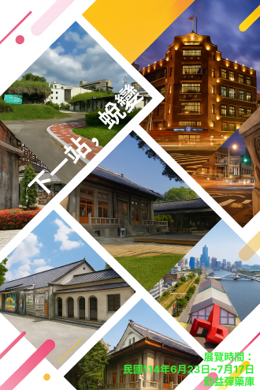
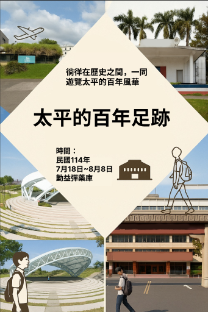
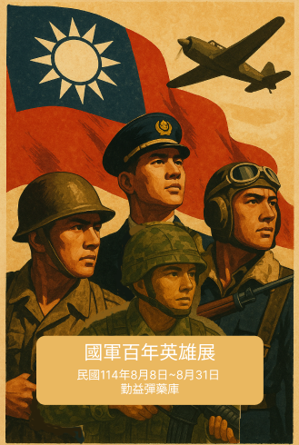

歷史場域再生，城市記憶新生
「下一站，蛻變」是一場關於文化資產再生與城市蛻變的特展，將於民國114年6月23日至7月17日，在勤益彈藥庫隆重登場。本展覽以全台各地轉型再利用的歷史建築與空間為核心，透過視覺呈現與空間敘事，描繪這些曾經沉睡的場域如何在時代的洪流中覓得新生，搖身一變成為文化基地、創意空間或市民休憩之所，見證台灣城市記憶的延續與重塑。 展覽內容涵蓋多個知名案例，如高雄的駁二藝術特區、台北的華山文創園區、台中的審計新村、台南的藍晒圖文創園區等。這些場域曾是工廠、車站、軍事設施或政府機關，在歷經閒置、改建與保存討論之後，最終以嶄新面貌回歸城市生活之中。觀眾可以透過照片、模型、影片與空間互動裝置，身歷其境地感受這些場域的過去與現在，並思考城市如何以創意與文化重新詮釋歷史。 展覽共分為三大主軸：「記憶的轉譯」——探討建築的歷史背景與其文化意義；「再生的契機」——呈現再利用過程中面臨的挑戰與創新設計；「未來的可能」——引導觀眾思考文化資產與生活、城市與人的永續關係。 此外，展場設有「我的城市提案」互動牆，邀請觀眾寫下心中最想再生的場域，或分享對老建築的記憶與願景；現場也安排導覽活動與主題講座，邀請文化保存與都市設計領域的專家進行對談，交流不同觀點與實務經驗。 「下一站，蛻變」不只是對空間的想像，更是對文化傳承與地方再生的深刻反思。誠摯邀請您一同踏上這場城市蛻變之旅，從一棟棟建築的轉變中，看見時間的痕跡與未來的可能。
展覽地點：國立勤益科技大學勤益彈藥庫 ( 臺中市太平區中山路二段57號 )
週日：上午09時至下午04時30分；
展覽時間：2025/06/23——2025/07/29
策展人：李大四
「下一站，蛻變」是一場關於文化資產再生與城市蛻變的特展，將於民國114年6月23日至7月17日，在勤益彈藥庫隆重登場。本展覽以全台各地轉型再利用的歷史建築與空間為核心，透過視覺呈現與空間敘事，描繪這些曾經沉睡的場域如何在時代的洪流中覓得新生，搖身一變成為文化基地、創意空間或市民休憩之所，見證台灣城市記憶的延續與重塑。 展覽內容涵蓋多個知名案例，如高雄的駁二藝術特區、台北的華山文創園區、台中的審計新村、台南的藍晒圖文創園區等。這些場域曾是工廠、車站、軍事設施或政府機關，在歷經閒置、改建與保存討論之後，最終以嶄新面貌回歸城市生活之中。觀眾可以透過照片、模型、影片與空間互動裝置，身歷其境地感受這些場域的過去與現在，並思考城市如何以創意與文化重新詮釋歷史。 展覽共分為三大主軸：「記憶的轉譯」——探討建築的歷史背景與其文化意義；「再生的契機」——呈現再利用過程中面臨的挑戰與創新設計；「未來的可能」——引導觀眾思考文化資產與生活、城市與人的永續關係。 此外，展場設有「我的城市提案」互動牆，邀請觀眾寫下心中最想再生的場域，或分享對老建築的記憶與願景；現場也安排導覽活動與主題講座，邀請文化保存與都市設計領域的專家進行對談，交流不同觀點與實務經驗。 「下一站，蛻變」不只是對空間的想像，更是對文化傳承與地方再生的深刻反思。誠摯邀請您一同踏上這場城市蛻變之旅，從一棟棟建築的轉變中，看見時間的痕跡與未來的可能。
展覽地點：國立勤益科技大學勤益彈藥庫 ( 臺中市太平區中山路二段57號 )
勤益彈藥庫開放時間：
週二至週六：上午09時至下午08時30分；週日：上午09時至下午04時30分；
下一站，蛻變


太平的百年足跡
探索太平的百年歷史風華
「太平的百年足跡」展覽將於民國114年7月18日至8月8日，在太平勤益彈藥庫盛大舉辦。本展覽以時間為軸線、空間為舞台，帶領觀眾深入探索太平地區從日治時期以來的百年歷史發展與生活變遷，從傳統農業社會到現代城市型態，呈現出太平多樣且豐富的歷史風貌。 展覽主題聚焦於「人」、「地」、「建築」三大面向，透過圖文展板、歷史照片、實物展示與多媒體互動裝置，呈現地方特色與歷史演進。例如，太平的老街、傳統市場、重要學校與公共建設如何見證社區的變遷，以及過去重要事件對地方所造成的深遠影響。參觀者將可以看到不同時期的街景對照，了解日治時代設施留下的文化印記，並重新認識太平人過去的生活方式與精神樣貌。 特別策劃的「時光走廊」將以沉浸式設計，讓觀眾如同穿梭在舊時光中，重返太平早期的田野、工廠與學校現場；而在「建築與記憶」區域，則介紹了幾棟具有歷史意義的建築物，例如老校舍、公家機關與軍事設施，展示其建築風格、用途轉變與文化價值。 展覽同時也邀請在地耆老與藝術工作者共同參與，以口述歷史、手繪地圖與藝術創作的方式，補足文字之外的溫度與情感。觀眾除了觀展，也能參與現場導覽活動、工作坊與講座，透過親身參與，更深入地連結自身與地方的歷史記憶。 歡迎您一同走進太平的百年故事，尋找屬於自己與這片土地的連結，見證歷史與當代交織出的動人風華。
展覽地點：國立勤益科技大學勤益彈藥庫 ( 臺中市太平區中山路二段57號 )
週日：上午09時至下午04時30分；
展覽時間：2025/07/18——2025/08/08
策展人：張阿三
「太平的百年足跡」展覽將於民國114年7月18日至8月8日，在太平勤益彈藥庫盛大舉辦。本展覽以時間為軸線、空間為舞台，帶領觀眾深入探索太平地區從日治時期以來的百年歷史發展與生活變遷，從傳統農業社會到現代城市型態，呈現出太平多樣且豐富的歷史風貌。 展覽主題聚焦於「人」、「地」、「建築」三大面向，透過圖文展板、歷史照片、實物展示與多媒體互動裝置，呈現地方特色與歷史演進。例如，太平的老街、傳統市場、重要學校與公共建設如何見證社區的變遷，以及過去重要事件對地方所造成的深遠影響。參觀者將可以看到不同時期的街景對照，了解日治時代設施留下的文化印記，並重新認識太平人過去的生活方式與精神樣貌。 特別策劃的「時光走廊」將以沉浸式設計，讓觀眾如同穿梭在舊時光中，重返太平早期的田野、工廠與學校現場；而在「建築與記憶」區域，則介紹了幾棟具有歷史意義的建築物，例如老校舍、公家機關與軍事設施，展示其建築風格、用途轉變與文化價值。 展覽同時也邀請在地耆老與藝術工作者共同參與，以口述歷史、手繪地圖與藝術創作的方式，補足文字之外的溫度與情感。觀眾除了觀展，也能參與現場導覽活動、工作坊與講座，透過親身參與，更深入地連結自身與地方的歷史記憶。 歡迎您一同走進太平的百年故事，尋找屬於自己與這片土地的連結，見證歷史與當代交織出的動人風華。
展覽地點：國立勤益科技大學勤益彈藥庫 ( 臺中市太平區中山路二段57號 )
勤益彈藥庫開放時間：
週二至週六：上午09時至下午08時30分；週日：上午09時至下午04時30分；
回顧百年軍魂，向英勇將士致敬
「國軍百年英雄展」將於民國114年8月8日至8月31日，在勤益彈藥庫隆重登場。本展以時代背景為經緯、英勇事蹟為經典，呈現國軍自建軍以來百年的歷史發展與戰役英豪，展現堅定守土衛國的精神風貌。無論是抗日戰爭、國共內戰、八二三砲戰，抑或是近年來維護國土安全與救災任務中，國軍官兵始終堅守崗位、無懼挑戰，是中華民國堅強的後盾。 展覽分為四大主題區： 一、「建軍溯源」：回顧國軍自黃埔建軍起的發展歷程，展出建軍初期的重要文件、服裝與標誌； 二、「戰火中的身影」：聚焦重要戰役與作戰場景，透過歷史照片、戰爭文物與模型，真實重現國軍官兵的英勇表現； 三、「軍魂人物誌」：介紹數位具代表性的軍人英雄，包括他們的奮戰故事與精神傳承； 四、「國軍與社會」：展出國軍在和平時期的貢獻，如救災、防疫、援外等事蹟，展現軍人不只在戰場上英勇，在民間亦是堅強的守護者。 本展特別設有「榮耀牆」，讓民眾可以留言，向曾為國付出的將士致敬；同時也有互動導覽與VR戰役體驗，讓觀眾能沉浸式走進歷史場景，感受當年國軍官兵的壓力與信念。 「國軍百年英雄展」不僅是一次對歷史的回顧，更是一場精神洗禮。透過實體文物與視覺敘事，帶領觀眾重新認識國軍的價值與貢獻，也讓年輕一代了解自由得來不易。誠摯邀請您一同踏上這場英勇旅程，見證中華民國國軍的百年光榮！
展覽地點：國立勤益科技大學勤益彈藥庫 ( 臺中市太平區中山路二段57號 )
週日：上午09時至下午04時30分；
展覽時間：2025/08/08——2025/08/31
策展人：李家豪
「國軍百年英雄展」將於民國114年8月8日至8月31日，在勤益彈藥庫隆重登場。本展以時代背景為經緯、英勇事蹟為經典，呈現國軍自建軍以來百年的歷史發展與戰役英豪，展現堅定守土衛國的精神風貌。無論是抗日戰爭、國共內戰、八二三砲戰，抑或是近年來維護國土安全與救災任務中，國軍官兵始終堅守崗位、無懼挑戰，是中華民國堅強的後盾。 展覽分為四大主題區： 一、「建軍溯源」：回顧國軍自黃埔建軍起的發展歷程，展出建軍初期的重要文件、服裝與標誌； 二、「戰火中的身影」：聚焦重要戰役與作戰場景，透過歷史照片、戰爭文物與模型，真實重現國軍官兵的英勇表現； 三、「軍魂人物誌」：介紹數位具代表性的軍人英雄，包括他們的奮戰故事與精神傳承； 四、「國軍與社會」：展出國軍在和平時期的貢獻，如救災、防疫、援外等事蹟，展現軍人不只在戰場上英勇，在民間亦是堅強的守護者。 本展特別設有「榮耀牆」，讓民眾可以留言，向曾為國付出的將士致敬；同時也有互動導覽與VR戰役體驗，讓觀眾能沉浸式走進歷史場景，感受當年國軍官兵的壓力與信念。 「國軍百年英雄展」不僅是一次對歷史的回顧，更是一場精神洗禮。透過實體文物與視覺敘事，帶領觀眾重新認識國軍的價值與貢獻，也讓年輕一代了解自由得來不易。誠摯邀請您一同踏上這場英勇旅程，見證中華民國國軍的百年光榮！
展覽地點：國立勤益科技大學勤益彈藥庫 ( 臺中市太平區中山路二段57號 )
勤益彈藥庫開放時間：
週二至週六：上午09時至下午08時30分；週日：上午09時至下午04時30分；
國軍百年英雄展
